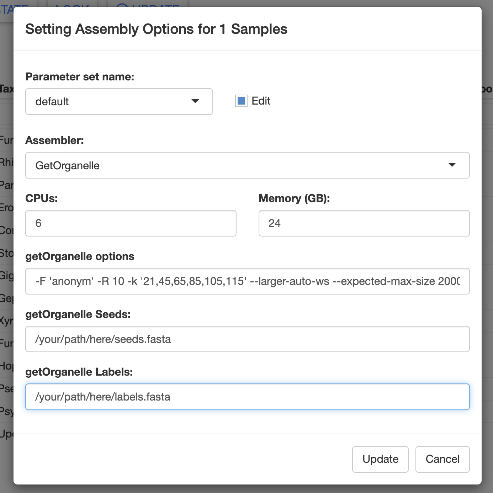
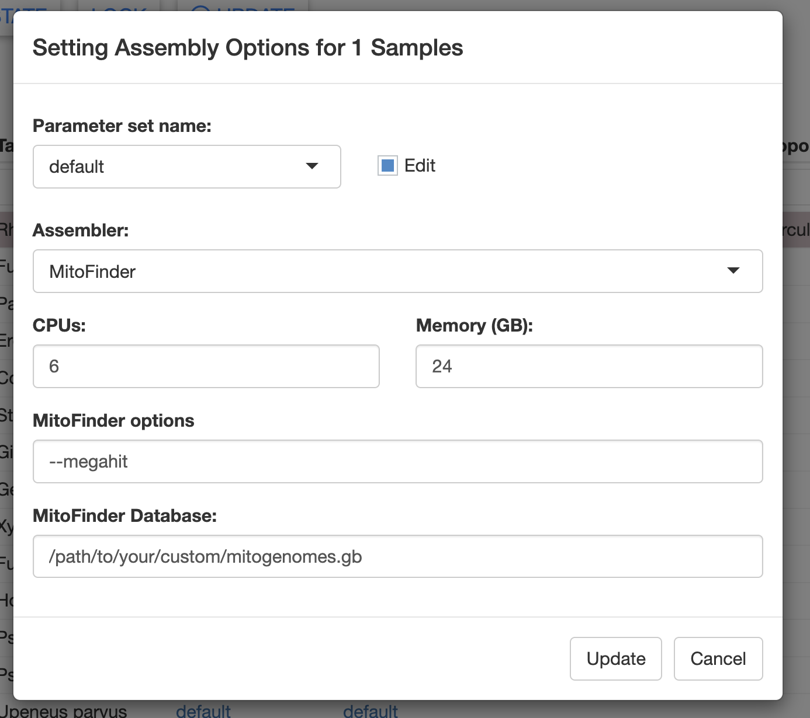

02 - custom assembly database
Why use a custom assembly database?
Currently, MitoPilot comes packaged with assembly reference databases for fishes. If you are working on any other taxonomic group, you will need to compile databases of mitochondrial sequences for your clade.
Build custom databases for GetOrganelle
Before proceeding, consider reviewing the GetOrganelle paper and documentation to better understand the required database architecture.
GetOrganelle uses two databases, both in FASTA format:
- A “seed” database containing complete (or partial) mitochondrial genomes
- A “label” database containing individual mitochondrial gene sequences
GetOrganelle databases on Hydra
Currently, we have the following custom GetOrganelle databases available on Hydra at /scratch/nmnh_ocean_dna/GetOrganelle_refDBs/
- Anthozoa
- Asteroidea
- Copepoda
- Diptera
- Hexacorallia
- Lepidosauria
- Mammalia
- Metazoa
- Octocorallia
- Testudinata
Each of these folders contains a subdirectory <<DATE>>/refs_final, inside of which are two files: labelDB.fasta and seedDB.fasta. These files consist of all NCBI RefSeq mitogenomes (seeds) and mitochondrial genes (labels) for the clade.
If your group is not listed here, we have provided the following script to assist with building your own custom database.
GenBankDownloadUtil.sh
This script will perform a GenBank query for all mitochondrial records matching your search criteria, download those sequences, and sort them into GetOrganlle “seed” and “label” databases.
Before proceeding, you will need the following dependencies:
- Entrez Direct tools (tested with v22.8)
- python (tested with v3.12.2)
- biopython (tested with v1.84)
On the Smithsonian Hydra cluster, python and biopython are available as a module. Simply run module load bio/biopython/1.83.
To download and install Entrez Direct tools:
sh -c "$(curl -fsSL https://ftp.ncbi.nlm.nih.gov/entrez/entrezdirect/install-edirect.sh)"
echo "export PATH=\$HOME/edirect:\$PATH" >> $HOME/.bash_rcNext, download the GenBankDownloadUtil.sh script to the directory where you want to create the custom databases. You will also need to download parseGB.py to the same directory.
mkdir ~/custom_GetOrg_db_test
cd ~/custom_GetOrg_db_test
wget https://raw.githubusercontent.com/smithsonian/MitoPilot/refs/heads/main/ref_dbs/getOrganelle/GenBankDownload/GenBankDownloadUtil.sh
wget https://raw.githubusercontent.com/smithsonian/MitoPilot/refs/heads/main/ref_dbs/getOrganelle/GenBankDownload/parseGB.pyTo run the script, you will need to construct an advanced GenBank query. For example, if you want to download all starfish mitochondrial sequences, you could use '"Asteroidea"[Organism]'.
The script can also accept multiple search terms. For example, use '"Percidae"[Organism] AND "PRJNA720393"[BioProject]' to download all percid mitochondrial sequences from a specific BioProject.
You can restrict your results to only NCBI RefSeq by adding the search term "RefSeq"[Filter]'. RefSeq is a more curated subset of the data on GenBank, allowing you to avoid poor quality mitogenomes.
Run the script as follows, providing your custom search terms. Make sure the full query is in single quotes, each search term is in double quotes, and the query type is in square brackets.
bash GenBankDownloadUtil.sh '"my query"[QueryType]'
This may take a while depending on how many GenBank records match your search terms. If working on a computing cluster, we recommend running this script as a batch job. Below is an example submission script for the Hydra cluster.
The submission script below requires the Entrez Direct tools in your PATH (i.e. these tools can be run from any directory).
# /bin/sh
# ----------------Parameters---------------------- #
#$ -S /bin/sh
#$ -pe mthread 8
#$ -q sThM.q
#$ -l mres=640G,h_data=80G,h_vmem=80G,himem
#$ -cwd
#$ -j y
#$ -N customGetOrgDBs
#$ -o customGetOrgDBs.log
# script to generate custom seed and label DBs for starfish
source ~/.bashrc
# load python and biopython module
module load bio/biopython/1.83 # need python and biopython too
# run the script
bash GenBankDownloadUtil.sh '"Asteroidea"[Organism]'The script will produce several files:
genbank.gb- GenBank file containing all of the matching recordsmultigene.fasta- FASTA file of sequences that contained multiple gene records, indicating they are either a partial or complete mitogenomemultigene.dedup.fasta- same asmultigene.fasta, but with duplicate sequences removednogene.fasta- FASTA file of mitochondrial sequences with no annotated genesnogene.dedup.fasta- same asnogene.fasta, but with duplicate sequences removedsinglegene.fasta- FASTA file of mitochondrial gene sequencessinglegene.dedup.fasta- same assinglelocus.fasta, but with duplicate sequences removed
The most relevant files for GetOrganelle are:
- seed database =
multigene.dedup.fasta(plus maybe some sequences fromnogene.dedup.fasta) - label database =
singlegene.dedup.fasta
The nogene.fasta file contains un-annotated mitochondrial sequences or mitochondrial sequences from a non-gene region, such as the D-loop (AKA control region). Consider manually inspecting these sequences. You may wish to include some of them in your custom GetOrganelle seed database.
Inspecting custom databases
Here are a few basic methods to inspect and manipulate FASTA files on the command line.
Count the number of sequences in a FASTA file:
grep -c ">" singlelocus.dedup.fastaGenerate list of FASTA headers:
grep ">" singlelocus.dedup.fastaGenerate list of unique gene names:
grep ">" singlelocus.dedup.fasta | cut -f1 -d" " | sort | uniqCalculate sequence lengths:
cat my_file.fasta | awk '$0 ~ ">" {if (NR > 1) {print c;} c=0;printf substr($0,2,100) "\t"; } $0 !~ ">" {c+=length($0);} END { print c; }'Extract specific sequences from a FASTA file with seqkit:
# Extract sequences based on names.txt
# names.txt should contain full sequences headers, one per line, but no ">" at start
module load bio/seqkit/2.8.1 # ONLY FOR NMNH HYDRA CLUSTER
seqkit grep -f -n names.txt file.fasta > file_subset.fastaRemove sequences from a FASTA file with seqkit:
# Remove sequences based on name patterns listed in names.txt
# one pattern per line
module load bio/seqkit/2.8.1 # ONLY FOR NMNH HYDRA CLUSTER
seqkit grep -v -f names.txt file.fasta > file_subset.fastaGenBankDownloadUtil.sh will rename any sequence with no GenBank “product” (protein, tRNA, or rRNA) as “no_product ACCESSION”. You may wish to remove these sequences, as they often represent poorly annotated genes.
Adding your own sequences to a custom database
To use unpublished mitogenomes in a custom GetOrganelle seed database, you will need to combine multiple FASTA files. GetOrganelle does not require a specific format for the sequence names in the seed database.
You can easily combine FASTA files with the Linux cat command:
cat multigene.dedup.fasta my_mitogenomes.fasta even_more_mitogenomes.fasta > final_seed_db.fastaYou could add unpublished individual gene sequences to a custom GetOrganelle label database in a similar manner.
Using a custom GetOrganelle database with MitoPilot
To use custom GetOrganelle assembly databases, you can specify the following arguments when setting up a new project with MitoPilot::new_project.
custom_seeds_db: full path to custom seeds database FASTA filecustom_labels_db: full path to custom labels database FASTA file
Alternatively, you can supply these file paths in the Assembly Opts. window of the Assemble module.

Build custom databases for MitoFinder
The MitoFinder documentation has instructions on how to build a reference database.
The MitoFinder reference database is simple: a GenBank formatted file (.gb) containing one or more annotated mitogenomes. This file can be downloaded from a GenBank query in a web browser.
Assembly of contigs with MitoFinder is completely de novo. The MitoFinder reference database is only used to “label” putative mitochondrial contigs. Thus, the species in your reference database can be fairly distant relatives of your samples.
Using a custom MitoFinder database with MitoPilot
To use a custom Mitofinder database, you can supply the path to the GenBank file in the Assembly Opts. window of the Assemble module.
